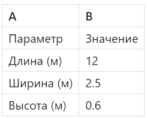
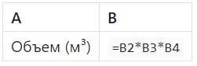
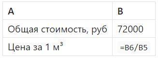

Умножение и деление

Андрей, в этом уроке мы изучим базовые формулы Excel для умножения и деления. Это одни из самых часто используемых операций в инженерных расчетах. В строительстве умножение — это, например, расчет объемов, стоимости, массы материалов. А деление часто используется для нахождения единичной стоимости, пропорций и распределения материалов. Сегодня мы посчитаем кубатуру фундамента, зная длину, ширину и высоту. И ты поймешь, как просто и быстро автоматизировать такие расчеты в Excel. Поехали!
Основы умножения и деления в Excel
В Excel умножение выполняется через знак «*», а деление — через знак «/». Формулы всегда начинаются со знака «=». Например: «=A1*B1», «=C1/D1».

Пример расчет объема фундамента
Рассчитаем объем прямоугольного фундамента. Объем = Длина × Ширина × Высота.
- Введи заголовки:

- В следующей строке введи формулу для объема:

Excel выполнит умножение значений и выдаст результат. Это и есть объем фундамента.
Пример деления: цена за куб
Теперь допустим, что нам нужно рассчитать цену за один кубометр бетона. Если известно, что весь фундамент стоит 72 000 рублей, делим цену на объем:

И мы получаем цену за куб. Такие расчеты пригодятся при составлении смет.
- Используй ссылки на ячейки, а не вручную вводи числа.
- Если ты делишь на ноль — Excel выдаст ошибку «#ДЕЛ/0!». Это нормально, проверь исходные данные.
- Можно комбинировать формулы: «=(B2*B3*B4)*1.2»` — для расчета с учетом 20% запаса.
Отлично! Давай закрепим результат, чтобы не сбавлять темп в обучении. Кстати, я еще не говорил, что выполнение тестовых заданий существенно упростит тебе сдачу итогового теста по итогам обучения? ;)